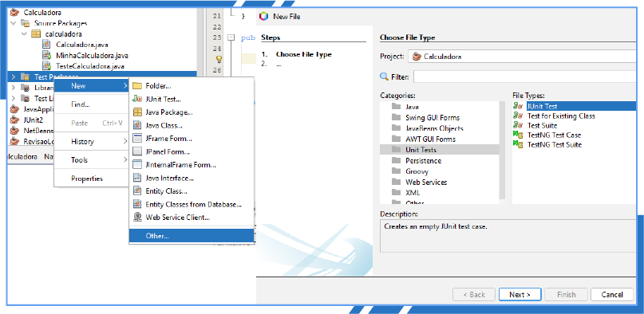
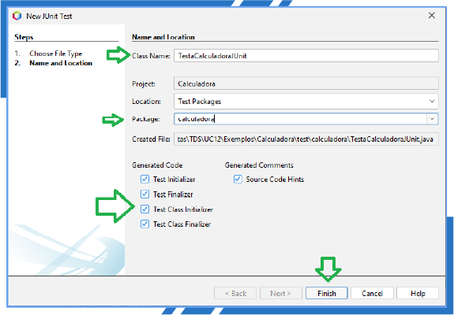
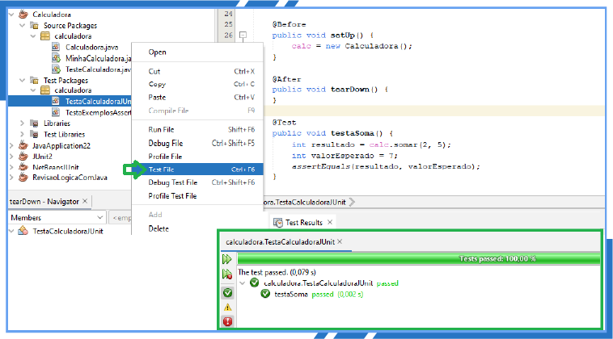
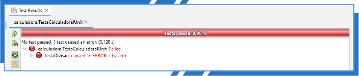
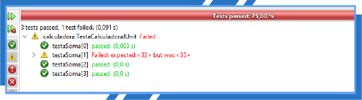
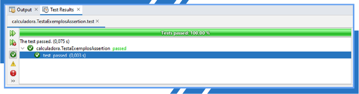
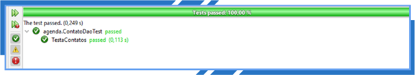

Como sugestão, configure a opção de leitura de caracteres e de pontuação de seu leitor de tela para o grau máximo de leitura, a fim de que os códigos disponibilizados neste material sejam lidos corretamente. No caso do NVDA (NonVisual Desktop Access), para localizar a opção Grau de pontuação/símbolos, acesse Preferências – Configurações – Fala. Altere o padrão Pouco para Tudo. Dessa forma, o leitor passará a ler os segmentos de código em sua totalidade.
O desenvolvimento de software envolve diferentes etapas e processos, desde escrever código e testar todas as funções até depurar e implantar. O teste de unidade é um importante método de teste usado pelas equipes de controle de qualidade para garantir que um produto de software esteja livre de erros e atenda a todos os requisitos essenciais.
Atualmente, o teste de unidade tornou-se indiscutível no ciclo de teste de software para garantir que cada unidade desse produto seja completamente funcional e opere conforme foi planejada. No teste de unidade, os testadores validam cada parte testável de um sistema para garantir que cada unidade do código funcione conforme o esperado. Ele é executado nos estágios iniciais de desenvolvimento de software por desenvolvedores ou testadores.
O teste de unidade é essencial para o desenvolvimento de software rápido e ágil. Também pode ajudar as equipes de desenvolvimento e controle de qualidade a obter vários benefícios de curto e longo prazos, principalmente em relação à melhoria geral da qualidade do sistema e à satisfação do cliente.
Em um software, a menor parte de um código que pode ser testada é chamada de unidade de código. O teste de unidade é um método de teste usado no ciclo de desenvolvimento de software para validar se uma unidade de código se comportará como pretendido e se o código testado produzirá o mesmo resultado toda vez que o teste for executado. O teste de unidade está incluído no teste de caixa-branca e geralmente é feito escrevendo casos de teste que exercitam funções, métodos e classes individuais.
A seguir, veja as etapas importantes usadas para executar testes de unidade.
Os casos de teste dos testes de unidade são simples e claros para que sejam fáceis de ler e entender, mesmo que tenham lógica complexa e muitas variáveis.
O teste de unidade é crucial para os desenvolvedores durante o desenvolvimento de software, pois, quando feito de maneira adequada no estágio inicial do desenvolvimento, pode ajudá-los a economizar tempo e dinheiro. Os programadores geralmente executam esse teste no ambiente de desenvolvimento antes de combinar o código com outros módulos funcionais de código existentes. Há uma alta probabilidade de o código ser defeituoso quando o teste de unidade do software não for executado.
A seguir, veja as principais razões pelas quais os testadores consideram o teste de unidade uma parte importante do ciclo de teste de software:
Escrevendo um teste para a classe Calculadora?
No código-fonte a seguir, pode-se observar que a classe Calculadora tem quatro métodos: somar, subtrair, multiplicar e dividir. Todos eles recebem como entrada dois números inteiros, realizam operações aritméticas correspondentes e retornam o resultado.
public class Calculadora {
public int somar(int n1, int n2) {
return n1 + n2;
}
public int subtrair(int n1, int n2) {
return n1 - n2;
}
public int multiplicar(int n1, int n2) {
return n1 * n2;
}
public int dividir(int n1, int n2) {
return n1 / n2;
}
}
Observe que no método dividir há um problema proposital. Não se está validando a possibilidade de uma divisão por zero, ou seja, da forma apresentada sem esse tratamento, ocorrerá erro.
Veja, a seguir, como criar a classe MinhaCalculadora com o método main.
Neste exemplo, você tem v1 = 4 e v2 = 2.
public class MinhaCalculadora {
public static void main(String[] args) {
Calculadora calc = new Calculadora();
int v1, v2;
v1 = 4;
v2 = 2;
System.out.println("Soma: " + calc.somar(v1, v2) );
System.out.println("Subtração: " + calc.subtrair(v1, v2) );
System.out.println("Multiplicação: " + calc.multiplicar(v1, v2) );
System.out.println("Divisão: " + calc.dividir(v1, v2) );
}
}
Resultado:
run:
Soma: 6
Subtração: 2
Multiplicação: 8
Divisão: 2
BUILD SUCCESSFUL (total time: 0 seconds)
Agora, veja como criar a classe TesteCalculadora para testar a classe Calculadora.
Na classe TesteCalculadora, serão criados os métodos de teste testaSoma(), testaSubtracao(), testaMultiplicacao() e testaDivisao(), que realizarão suas respectivas operações com os valores 3 e 2.
Desse modo, o resultado deverá ser 5 para operação de soma, 1 para operação de subtração, 6 para multiplicação e 1 para divisão. Caso o resultado de cada operação esteja correto, será exibido “OK”; caso contrário, aparecerá “ERRO”.
O método main() é responsável apenas por realizar a chamada de cada método.
public class TesteCalculadora {
public void testaSoma(){
Calculadora calc = new Calculadora();
int resultado = calc.somar(3, 2);
System.out.println("testaSoma: " + (resultado==5 ? "OK" : "ERRO"));
}
public void testaSubtracao(){
Calculadora calc = new Calculadora();
int resultado = calc.subtrair(3, 2);
System.out.println("testaSub: " + (resultado==1 ? "OK" : "ERRO"));
}
public void testaMultiplicacao(){
Calculadora calc = new Calculadora();
int resultado = calc.multiplicar(3, 2);
System.out.println("testaMult: " + (resultado==6 ? "OK" : "ERRO"));
}
public void testaDivisao(){
Calculadora calc = new Calculadora();
int resultado = calc.dividir(3, 2);
System.out.println("testaDiv: " + (resultado==1 ? "OK" : "ERRO"));
}
public static void main(String[] args) {
new TesteCalculadora().testaSoma();
new TesteCalculadora().testaSubtracao();
new TesteCalculadora().testaMultiplicacao();
new TesteCalculadora().testaDivisao();
}
}
Resultado:
run:
testaSoma: OK
testaSub: OK
testaMult: OK
testaDiv: OK
BUILD SUCCESSFUL (total time: 0 seconds)
O que se pode observar nesse exemplo é que não ocorreram erros, pois os dados validados correspondem ao resultado esperado. Porém, caso ocorram futuramente alterações dentro de algum método da classe Calculadora, no momento da execução dos testes na classe TestaCalculadora, a mensagem de erro será exibida. Esse é o objetivo principal dos testes unitários, testar cada parte do código, conforme os testes forem definidos.
Você pode estar se questionando agora se essa classe de teste está pronta. Você se lembra do método de divisão que não trata a divisão por zero? Então, caso sejam informados, no método testaDivisao, os valores 3 e 0 em vez de 3 e 2, veja o que correrá:
public void testaDivisao(){
Calculadora calc = new Calculadora();
int resultado = calc.dividir(3, 0);
System.out.println("testaDiv: " + (resultado==1 ? "OK" : "ERRO"));
}
Resultado:
run:
testaSoma: OK
testaSub: OK
testaMult: OK
Exception in thread "main" java.lang.ArithmeticException: / by zero
at calculadora.Calculadora.dividir(Calculadora.java:18)
at calculadora.TesteCalculadora.testaDivisao(TesteCalculadora.java:25)
at calculadora.TesteCalculadora.main(TesteCalculadora.java:33)
BUILD FAILED (total time: 0 seconds)
Conforme o resultado apresentado, foi gerada uma exceção e não houve um resultado do teste. Para ter certeza de que o seu código não tem erro, é preciso testar todas as possíveis entradas de um método. Para esse caso, é possível testar alguns valores-chave que representam as possíveis entradas: -1000, -1, 0, null, +1, +1000.
Portanto, a classe TesteCalculadora é funcional, mas, para a boa prática de programação, erros devem ser tratados com exceções (blocos try catch), e não com simples avaliações condicionais (if e else). Criar testes dessa maneira, com controle de exceções, além de poluir o código com blocos try catch, é muito trabalhoso. É neste momento que se mostra útil a utilização de um framework para automatização de testes.
Existem muitas ferramentas automatizadas disponíveis no mercado para dar suporte a testes unitários. Algumas delas são JTest, JUnit, PHPUnit etc. O framework JUnit é a ferramenta de teste automatizado mais popular, baseada na linguagem Java. Ele fornece asserções para identificar vários métodos de teste.
Aqui, serão apresentados os frameworks JUnit e Mockito, além de exemplos de aplicabilidade em testes unitários.
JUnit é um framework de testes em Java que facilita a escrita de testes confiáveis e eficientes. Ele pode ser usado para softwares feitos na maioria das linguagens, mas é particularmente adequado para testar aplicativos Java.
A estrutura JUnit oferece vários recursos que facilitam a escrita de testes, incluindo suporte para vários casos de teste, asserções e executores de teste. Ele permite que você crie e execute testes com eficiência e tornou-se uma das estruturas de teste Java mais populares e amplamente utilizadas. O JUnit é usado principalmente para testes de unidade, mas também pode ser usado para outros testes, como funcionais e de integração.
A seguir, você verá as anotações e as assertions. Além disso, saberá como criar testes unitários com JUnit no NetBeans, com diversos exemplos.
O JUnit usa anotações para marcar métodos como métodos de teste e para configurá-los antes e depois da execução do teste.
A tabela a seguir apresenta um resumo das principais anotações do JUnit 4. Todas essas anotações podem ser usadas nos métodos de teste.
| Anotação | Descrição |
|---|---|
| @Test | Indica que o método ao qual está anexado pode ser executado como um caso de teste. |
| @Before | Indica que esse método deve ser executado antes de cada teste da classe, de forma a executar algumas pré-condições necessárias para o teste. |
| @BeforeClass | Indica que o método estático ao qual está anexado deve ser executado uma vez e antes de todos os testes da classe. Isso acontece quando os métodos de teste compartilham configuração computacionalmente cara (por exemplo, conectar ao banco de dados). |
| @After | Indica que esse método é executado após a execução de cada teste (por exemplo, redefinir algumas variáveis após a execução de cada teste, excluir variáveis temporárias etc.). |
| @AfterClass | Pode ser usada quando um método precisa ser executado após a execução de todos os testes em uma classe de teste com JUnit. Por exemplo: limpar a configuração; desconectar de um banco de dados. |
| @Ignore | Pode ser utilizada quando se deseja desabilitar temporariamente a execução de um teste específico. |
Tabela 1 – Principais anotações do JUnit 4
Fonte: Senac EAD (2023)
As anotações @BeforeClass e @AfterClass devem ser utilizadas em métodos definidos como estáticos.
As assertions são uma parte fundamental nos testes unitários. Elas permitem verificar o comportamento esperado de um sistema. O JUnit fornece um conjunto de métodos de asserção para você verificar se uma condição testada é verdadeira e, além disso, apresenta os resultados de um teste. Isso ajuda a evitar bugs e falhas no seu código. Todas as assertions estão na classe Assert.
Agora que você já tem uma visão geral, veja como utilizar as assertions no JUnit:
assertEquals: verifica se dois valores são iguais.
@Test
public void testaStringsIguais() {
String expectativa = "SENAC";
String atual = "SENAC";
assertEquals(expectativa, atual);
}
assertArrayEquals: afirmar que dois arrays são iguais.
@Test
public void testaArrayIguais() {
char[] expectativa = {'J', 'u', 'n', 'i', 't'};
char[] atual = "Junit".toCharArray();
assertArrayEquals(expectativa, atual);
}
assertNull: verificar se um objeto, ou uma variável, é nulo.
@Test
public void testaEhNullo() {
String nome = null;
assertNull("Variável é nula", nome);
}
assertNotNull: verificar se um objeto, ou uma variável, não pode ser nulo.
@Test
public void testaNaoNullo() {
String nome = "SENAC";
assertNotNull("Variável não é nula", nome);
}
assertNotSame e assertSame: com assertNotSame, verificar se duas variáveis não se referem ao mesmo objeto; com assertSame, verificar se duas variáveis se referem ao mesmo objeto.
@Test
public void testaObjetosDiferentes() {
Object gato = new Object();
Object cachorro = new Object();
assertNotSame(cachorro, gato);
}
assertTrue e assertFalse: verificar se uma determinada condição é verdadeira ou falsa (usar, respectivamente, assertTrue ou assertFalse).
@Test
public void testeCondicaoVerdadeFalse() {
assertTrue("5 é maior que 4", 5 > 4);
assertFalse("5 não é maior que 6", 5 > 6);
}
assertThat: verificar se um array contém valores específicos.
@Test
public void testAssertThatHasItems() {
assertThat(
Arrays.asList("Java", "JUnit", "Test"),
hasItems("Java", "SENAC"));
}
A seguir, você verá os fundamentos da escrita e execução de testes unitários usando JUnit 4 no NetBeans IDE (integrated development environment, ou ambiente de desenvolvimento integrado). Como já visto, testar um software é parte integrante no ciclo de desenvolvimento de software, por isso escrever e manter testes de unidade podem ajudar e garantir que métodos individuais em seu código-fonte funcionem corretamente.
O NetBeans IDE tem suporte para estrutura de testes com JUnit. Isso permite que desenvolvedores criem casos de testes rapidamente. Embora existam inúmeros plugins úteis disponíveis, esse exemplo de aplicabilidade ficará concentrado apenas na criação dos casos de teste.
Crie um teste unitário usando JUnit para a classe Calculadora. Para isso, clique com o botão direito do mouse em Test Packages > New > Other > Unit Tests > JUnit Test.

Figura 1 – Criando uma classe de teste com JUnit
Fonte: Senac EAD (2023)
À esquerda, painel Projetos do NetBeans com a pasta Test Packages selecionada e menu pop-up aberto com a opção New selecionada, revelando um submenu onde a opção Other está selecionada. À direita, janela de criação de novo arquivo (New File), onde está selecionado no campo Categorias a opção Unit Tests. À direita desse campo, no campo File Types, está selecionada a opção JUnit Test.
Em Class name, informe o nome da classe de teste, por exemplo TestaCalculadoraJUnit. Em Package, informe ou selecione o pacote onde foi criada a classe Calculadora. Nesse exemplo, o pacote é “calculadora”. Por fim, marque todas as opções em Generated Code e Generated Comments.

Figura 2 – Definindo o nome, package da classe
Fonte: Senac EAD (2023)
Janela de criação de novo teste com JUnit Test no NetBeans. Destacados os campos Class Name com o nome da classe “TestaCalculadoraJUnit” e Package com o nome do pacote “calculadora”. Em Generated Code e Generated Comments, todas as opções estão selecionadas. Abaixo, o botão Finish está destacado.
A seguir, veja o código da classe TestaCalculadoraJUnit, que tem o papel de testar os métodos da classe Calculadora.
package calculadora;
import org.junit.After;
import org.junit.AfterClass;
import org.junit.Before;
import org.junit.BeforeClass;
import org.junit.Test;
import static org.junit.Assert.*;
public class TestaCalculadoraJUnit {
private Calculadora calc;
public TestaCalculadoraJUnit() {
}
@BeforeClass
public static void setUpClass() {
}
@AfterClass
public static void tearDownClass() {
}
@Before
public void setUp() {
calc = new Calculadora();
}
@After
public void tearDown() {
}
@Test
public void testaSoma() {
int resultado = calc.somar(2, 5);
int valorEsperado = 7;
assertEquals(resultado, valorEsperado);
}
}
Agora, você entenderá o código anterior. Inicialmente, é possível ver que, no método setUp(), há a anotação @Before. Como visto anteriormente, é um espaço de preparação para a execução dos testes, em que se faz a instanciação de objetos necessários e a configuração de objetos ou de conexão com o banco de dados, se houver. Nesse exemplo, está sendo instanciado o objeto calc da classe Calculadora que está sendo testada.
Em um segundo momento, verifique que existe a anotação @Test, acima do método testaSoma(). Essa anotação indica que o método public void testaSoma() ao qual está sendo anexada pode ser executado como um caso de teste.
No corpo do método, é possível notar que há uma variável inteira resultado, que recebe o resultado da soma dos números 2 e 5 que ocorre por meio da chamada do método somar. Há também a variável valorEsperado, sendo atribuído 7. Por fim, na última linha, há a assertEquals, que é um método fornecido pela classe Assert do JUnit, responsável por receber dois objetos ou variáveis e afirmar que ambos são iguais.
Para executar o teste dessa classe, clique com o botão direito do mouse sobre a classe TestaCalculadoraJUnit, selecionando Test File ou aperte Ctrl + F6. Observe a imagem a seguir, em que o resultado do teste foi apresentado com sucesso.

Figura 3 – Como executar o teste e apresentar os resultados
Fonte: Senac EAD (2023)
No painel de projetos do NetBeans, projeto “Calculadora”, dentro da pasta Test Packages, no pacote “calculadora”, classe “TestaCalculadoraJUnit” está selecionada e está aberto um menu pop-up com a opção TestFile selecionada. Abaixo, é apresentando o painel do resultado do teste realizado. Um faixa verde indica que 100% dos testes foram realizados e um bola verde indica que o método testaSoma está em sucesso.
Agora, você retornará à situação do método dividir da classe Calculadora, em que o desenvolvedor esqueceu de tratar a divisão por zero.
Na classe de teste TestaCalculadoraJUnit, crie o método testaDivisao(), informando os valores 3 e 0.
@Test
public void testaDivisao() {
int resultado = calc.dividir(3, 0);
int valorEsperado = 1;
assertEquals(resultado, valorEsperado);
}
Execute o teste novamente, clicando com o botão direito do mouse sobre a classe TestaCalculadoraJUnit, selecionando a opção Test File ou aperte Ctrl + F6.
Veja, agora, o resultado em que o JUnit aponta o erro e ainda apresenta a possível causa. Isso realmente é fantástico, pois o teste consegue interceptar um problema e até mesmo apresentar a causa para correções.

Figura 4 – Execução do teste com erros
Fonte: Senac EAD (2023)
Painel de resultado do teste, com uma faixa em vermelho indicando que o método “testaDivisao” apresentou erro causado pela divisão por zero.
O teste parametrizado permite que um teste seja executado diversas vezes usando valores diferentes. Ele ajuda o desenvolvedor a economizar tempo na execução de um mesmo teste, que difere apenas em suas entradas e seus resultados esperados.
Para exemplificar, ajuste a classe TestaCalculadoraJUnit, realizando os seguintes passos:
Passo 1: crie três atributos privados do tipo int, primeiroNumero, segundoNumero e resultadoEsperado.
Você deve informar, acima do nome da classe, que ela é de teste parametrizado, por meio da anotação @RunWith(Parameterized.class).
Passo 2: o método construtor deverá agora receber os dados que serão testados e alimentar os três atributos privados criado no passo 1.
Passo 3: esta classe deverá conter um método estático com retorno do tipo Collection e anotação @Parameters. Esse método gera e retorna uma coleção de arrays. Cada item dessa coleção é usado como parâmetro para o método de teste, informando os dados de entrada e o resultado esperado.
Exemplos:
{1,2,3}, onde 1 e 2 (números a serem somados) e 3 (resultado esperado).
{11,22,35}, 11 e 22 (números a serem somados) e 35 (resultado esperado).
Observe que o correto seria 33, entretanto você estará validando como o teste se comporta com resultados indesejados.
Passo 4: no método testaSoma(), os números a serem somados e o resultado esperado serão provenientes dos atributos privados da classe, que serão gerados no passo 3.
O código a seguir mostra um exemplo de um teste parametrizado:
package calculadora;
import java.util.Arrays;
import java.util.Collection;
import org.junit.After;
import org.junit.AfterClass;
import org.junit.Before;
import org.junit.BeforeClass;
import org.junit.Test;
import static org.junit.Assert.*;
import org.junit.runner.RunWith;
import org.junit.runners.Parameterized;
import org.junit.runners.Parameterized.Parameters;
@RunWith(Parameterized.class)
public class TestaCalculadoraJUnit {
private Calculadora calc;
private int primeiroNumero;
private int segundoNumero;
private int resultadoEsperado;
public TestaCalculadoraJUnit(int n1, int n2, int esperado) {
this.primeiroNumero = n1;
this.segundoNumero = n2;
this.resultadoEsperado = esperado;
}
@BeforeClass
public static void setUpClass() {
}
@AfterClass
public static void tearDownClass() {
}
@Before
public void setUp() {
calc = new Calculadora();
}
@After
public void tearDown() {
}
@Parameters
public static Collection<Object[]> entradas() {
return Arrays.asList(
new Object[][] {
{1,2,3},
{11,22,35},
{111,222,333},
{10,9,19}
}
);
}
@Test
public void testaSoma() {
int resultado = calc.somar(primeiroNumero, segundoNumero);
assertEquals(resultado, resultadoEsperado);
}
}
Para executar esses testes detalhados, clique com o botão direito do mouse sobre a classe TestaCalculadoraJUnit, selecionando Test File ou aperte Ctrl + F6.

Figura 5 – Resultado dos testes
Fonte: Senac EAD (2023)
Painel de resultado do teste, com uma faixa em vermelho indicando que 75% dos testes foram executados com sucesso, com bolas em verde. Já o método “testaSoma” apresentou erro (imagem de alerta com o motivo). Apresenta falha, pois o resultado da soma deveria ser 33, mas retornou 35.
Em razão do segundo caso, em que o resultado esperado seria 33, porém foi informado 35, o teste retorna com erro. Dessa forma, 75% dos testes passaram.
Agora, você criará outra classe de teste. Para isso, clique com o botão direito do mouse em Test Packages > New > Other > Unit Tests > JUnit Test. Informe o nome da classe TestaExemplosAssertion.
Crie o seguinte teste:
import org.junit.Test;
import static org.junit.Assert.*;
public class TestaExemplosAssertion {
public TestaExemplosAssertion() {
}
@Test
public void test() {
String obj1 = "junit";
String obj2 = "junit";
String obj3 = "test";
String obj4 = "test";
String obj5 = null;
int var1 = 1;
int var2 = 2;
int[] arithmetic1 = {1, 2, 3};
int[] arithmetic2 = {1, 2, 3};
assertEquals(obj1, obj2);
assertSame(obj3, obj4);
assertNotSame(obj2, obj4);
assertNotNull(obj1);
assertNull(obj5);
assertTrue(var2 > var1);
assertArrayEquals(arithmetic1, arithmetic2);
}
}
Na classe anterior, é possível ver como esses métodos assert funcionam.
Para executar esses testes detalhados, clique com o botão direito do mouse sobre a classe TestaExemplosAssertion selecionando Test File ou aperte Ctrl + F6.

Figura 6 – Resultado dos testes
Fonte: Senac EAD (2023)
Painel do resultado do teste realizado. Um faixa verde indica que 100% dos testes foram realizados e um bola verde indica que o método “calculadora.TestaExemplosAssertion” está em sucesso.
Pratique com mais um exemplo passo a passo. Abra o NetBeans e acompanhe a montagem desses testes unitários. Antes de copiar os códigos de teste, tente desenvolvê-los por conta.
Passo 1: crie um projeto com Java Ant, clicando em File > New Project > Biblioteca.
Passo 2: crie a classe Livro com três atributos privados: livroId tipo int, titulo tipo String e anoPublicacao tipo int. Crie os métodos construtor, get e set.
package biblioteca;
public class Livro {
private int livroId;
private String titulo;
private int anoPublicacao;
public Livro(int livroId, String titulo, int anoPublicacao) {
this.livroId = livroId;
this.titulo = titulo;
this.anoPublicacao = anoPublicacao;
}
public int getLivroId() {
return livroId;
}
public void setLivroId(int livroId) {
this.livroId = livroId;
}
public String getTitulo() {
return titulo;
}
public void setTitulo(String titulo) {
this.titulo = titulo;
}
public int getAnoPublicacao() {
return anoPublicacao;
}
public void setAnoPublicacao(int anoPublicacao) {
this.anoPublicacao = anoPublicacao;
}
}
Passo 3: crie a classe LivroService que contenha uma lista de livros privada com os seguintes métodos:
package biblioteca;
import java.util.ArrayList;
import java.util.Collections;
import java.util.List;
public class LivroService {
private List<Livro> livros = new ArrayList<>();
public void adicionarLivro(Livro livro) {
livros.add(livro);
}
public List<Livro> listarLivros() {
return livros;
}
public Livro getlivroPorId(int livroId) {
for (Livro livro : livros) {
if (livroId == livro.getLivroId()) {
return livro;
}
}
return null;
}
public List<String> listarTitulosPorPubicacao(int ano) {
List<String> listaTitulos = new ArrayList<>();
for (Livro livro : livros) {
if (ano == livro.getAnoPublicacao()) {
listaTitulos.add(livro.getTitulo());
}
}
return listaTitulos;
}
}
Passo 4: crie um teste unitário usando JUnit para a classe LivroService. Para isso, no NetBeans:
package biblioteca;
import java.util.List;
import org.junit.After;
import org.junit.AfterClass;
import org.junit.Before;
import org.junit.BeforeClass;
import org.junit.Test;
import static org.junit.Assert.*;
public class LivroServiceTest {
private LivroService livroService;
public LivroServiceTest() {
}
@BeforeClass
public static void setUpClass() {
}
@AfterClass
public static void tearDownClass() {
}
@Before
public void setUp() {
livroService = new LivroService();
Livro livro1 = new Livro(1, "Java", 2019);
livroService.adicionarLivro(livro1);
Livro livro2 = new Livro(2, "Testes Unitários com JUnit", 2023);
livroService.adicionarLivro(livro2);
}
@After
public void tearDown() {
}
@Test
public void testar() {
}
}
Passo 5: crie testes unitários com a anotação @Test.
@Test
public void testar_listaPossuiAoMenosDoisLivros() {
assertTrue(livroService.listarLivros().size()>=2);
}
@Test
public void testar_primeiroLivroPossuiNomeJava() {
Livro livroAtual = livroService.getlivroPorId(1);
assertEquals("Java",livroAtual.getTitulo());
}
@Test
public void testar_livrosPublicadosEm2000() {
assertTrue(livroService.listarTitulosPorPubicacao(2000).size()>0);
}
Tela Inicial
O termo mock é utilizado em testes para descrever um caso especial de objetos que imitam objetos reais do sistema. São normalmente criados para testar o comportamento de outros objetos. Em outras palavras, os objetos mock são objetos “falsos” que simulam o comportamento de uma classe ou objeto “real” para que seja possível focar o teste na unidade a ser testada.
Mockito é um framework em Java usado em conjunto com o JUnit. Ele permite criar e configurar objetos fictícios nos testes unitários. O uso do Mockito simplifica significativamente o desenvolvimento de testes para classes com dependências externas.
Antes de usar a técnica mock, você deve saber quais são as principais vantagens dela:
A seguir, veja as principais anotações.
| Anotação | Definição |
|---|---|
| @Mock | Cria uma instância de uma classe, porém “mocada”. Se você chamar um método, ele não chamará o método real. |
| @InjectMocks | Cria uma instância e injeta as dependências necessárias que estão anotadas com @Mock. |
| @RunWith |
Responsável por fazer que todas as anotações do Mockito funcionem. Essa anotação deverá ficar anexada em cima do nome da classe que será testada: @RunWith(MockitoJUnitRunner.class) |
Tabela 2 – Principais anotações do Mockito
Fonte: Senac EAD (2023)
Para utilizar o Mockito no NetBeans, você precisa do JAR, que pode ser baixado diretamente nos repositórios do Maven.
Em seu buscador, digite “Maven Repository Mockito All”, acesse o site Maven Repositoty, selecione a versão mais estável e baixe o arquivo JAR. Nesse exemplo, será adotada a versão 1.10.19, como nome do arquivo “mockito-all-1.10.19.jar”. Podem existir versões mais recentes disponíveis no momento do seu acesso.
Agora, crie uma aplicação nova no NetBeans:
Passo 1: crie um projeto no NetBeans com Java Ant com nome de “Agenda”.
Passo 2: Adicione o JAR do Mockito baixado anteriormente. Para isso, clique com o botão direito do mouse em Libraries > Add Jar/Folder. Em seguida, vá para o local onde você baixou o JAR e clique em Ok.
Passo 3: crie a classe Contato com três atributos privados: contatoId tipo int, nome tipo String e telefone tipo String. Crie os métodos construtor, get e set.
package agenda;
public class Contato {
private int contatoId;
private String nome;
private String telefone;
public Contato() {
}
public Contato(int contatoId, String nome, String telefone) {
this.contatoId = contatoId;
this.nome = nome;
this.telefone = telefone;
}
public int getContatoId() {
return contatoId;
}
public void setContatoId(int contatoId) {
this.contatoId = contatoId;
}
public String getNome() {
return nome;
}
public void setNome(String nome) {
this.nome = nome;
}
public String getTelefone() {
return telefone;
}
public void setTelefone(String telefone) {
this.telefone = telefone;
}
}
Passo 4: crie a classe ContatoDao, com os métodos conectar(),salvar(),consultar() e desconectar().
package agenda;
import java.sql.PreparedStatement;
import java.sql.Connection;
import java.sql.DriverManager;
import java.sql.ResultSet;
import java.sql.SQLException;
public class ContatoDao {
Connection conn;
PreparedStatement st;
ResultSet rs;
public boolean conectar() {
try {
Class.forName("com.mysql.cj.jdbc.Driver");
conn = DriverManager.getConnection("jdbc:mysql://localhost:3306/exemplo_senac", "root", "");
return true;
} catch (ClassNotFoundException | SQLException ex) {
System.out.println("Erro ao conectar: " + ex.getMessage());
return false;
}
}
public int salvar(Contato contato) {
int status;
try {
st = conn.prepareStatement("INSERT INTO Contatos VALUES(?,?,?)");
st.setInt(1, contato.getContatoId());
st.setString(2, contato.getNome());
st.setString(3, contato.getTelefone());
status = st.executeUpdate();
return status;
} catch (SQLException ex) {
System.out.println("Erro ao conectar: " + ex.getMessage());
return ex.getErrorCode();
}
}
public Contato consultar(int id) {
try {
Contato contato = new Contato();
st = conn.prepareStatement("SELECT * from Contatos WHERE livroId = ?");
st.setInt(1, id);
rs = st.executeQuery();
if (rs.next()) {
contato.setContatoId(rs.getInt("contatoId"));
contato.setNome(rs.getString("nome"));
contato.setTelefone(rs.getString("telefone"));
return contato;
} else {
return null;
}
} catch (SQLException ex) {
System.out.println("Erro ao conectar: " + ex.getMessage());
return null;
}
}
public void desconectar() {
try {
conn.close();
} catch (SQLException ex) {
}
}
}
Passo 5: no banco de dados MySQL, crie o banco de dados exemplo_senac e a tabela Livro com a seguinte estrutura:
use exemplo_senac;
create table Livro(
livroId int(11) auto_increment,
titulo varchar(100),
anoPublicacao int(4),
primary key (livroId)
);
Passo 6: crie um teste unitário usando JUnit para a classe ContatoDao. Para isso, no NetBeans:
Repare que se está usando assertEquails, que verifica se o resultado “mocado” é igual ao esperado.
package agenda;
import org.junit.After;
import org.junit.AfterClass;
import org.junit.Before;
import org.junit.BeforeClass;
import org.junit.Test;
import static org.junit.Assert.*;
import org.junit.runner.RunWith;
import org.mockito.Mock;
import org.mockito.Mockito;
import org.mockito.MockitoAnnotations;
import org.mockito.runners.MockitoJUnitRunner;
@RunWith(MockitoJUnitRunner.class)
public class ContatoDaoTest {
@Mock
private ContatoDao contatoDao;
public ContatoDaoTest() {
}
@BeforeClass
public static void setUpClass() {
}
@AfterClass
public static void tearDownClass() {
}
@Before
public void setUp() {
}
@After
public void tearDown() {
}
@Test
public void TestaContatos() {
Contato contato1 = new Contato(1, "SENAC EAD", "51 99555544");
Mockito.when(contatoDao.consultar(1)).thenReturn(contato1);
Contato l = contatoDao.consultar(1);
assertEquals(l.getNome(), "SENAC EAD");
assertEquals(l.getTelefone(), "51 99555544");
}
}
Para executar os testes detalhados anteriormente, clique com o botão direito do mouse sobre a classe ContatoDaoTest selecionando Test File ou aperte Ctrl + F6.

Figura 7 – Resultado dos testes
Fonte: Senac EAD (2023)
Painel do resultado do teste realizado. Um faixa verde indica que 100% dos testes foram realizados e um bola verde indica que o método “TestaContato” está em sucesso.
Tela Inicial
Neste conteúdo, foi possível verificar diversos aspectos da utilização dos frameworks JUnit e Mockito em testes unitários. Por meio de diversos exemplos, foi possível verificar quanto o uso desses frameworks trazem mais praticidade na construção e na execução dos testes.